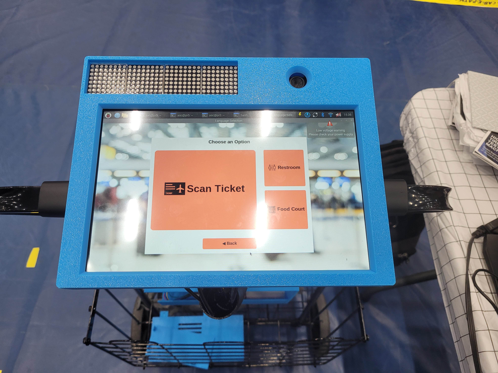
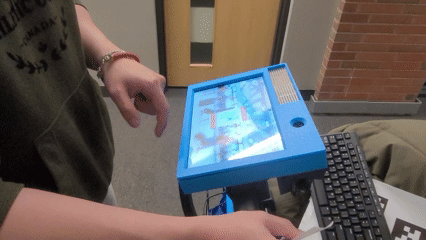
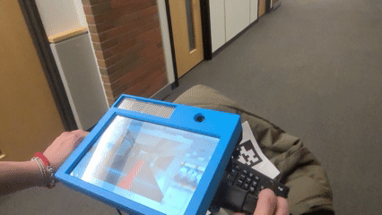
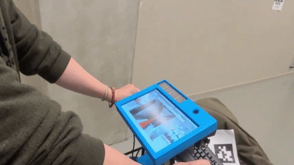
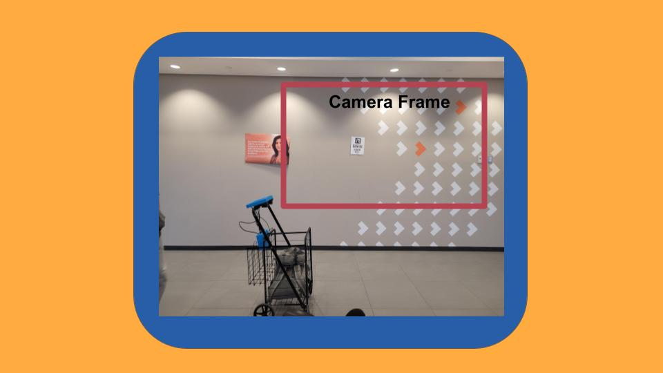
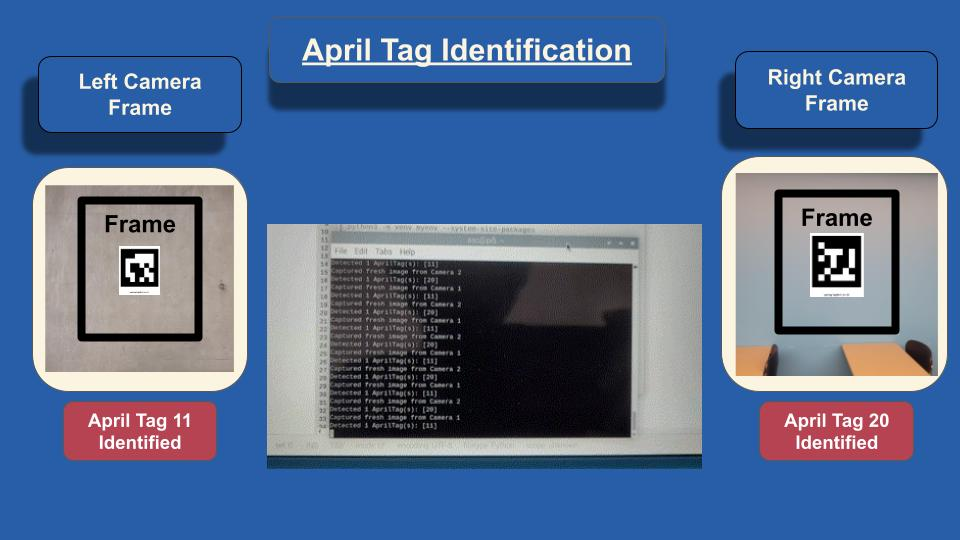
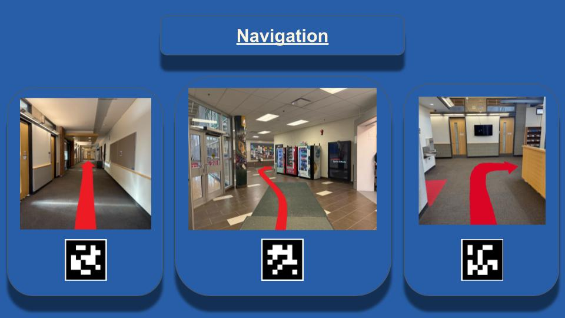
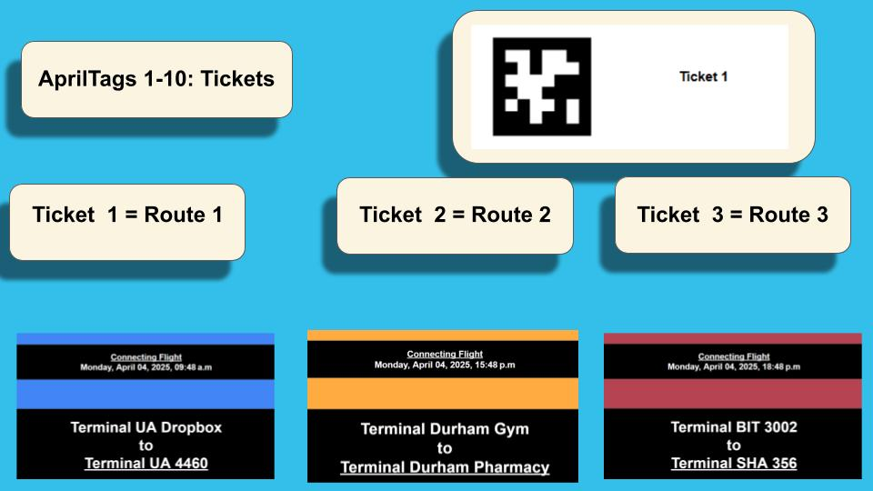
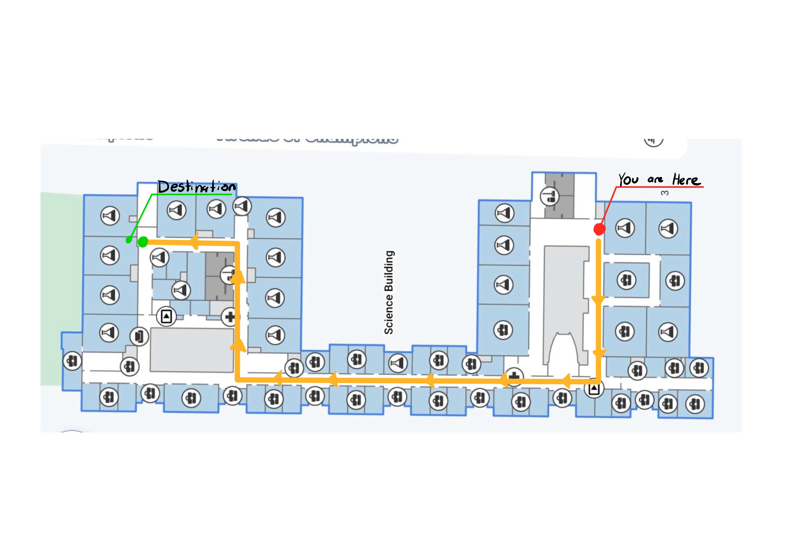
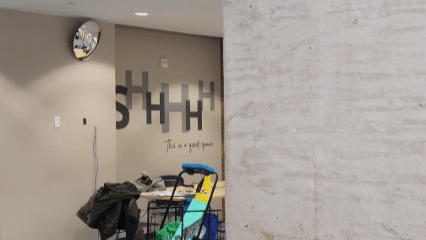

Capstone Project: Airport Smart Cart

Problem Statement
Airports can be overwhelming for elderly passengers, especially when navigating long distances, crowded terminals, and complex signage. Many seniors struggle to locate their gates independently, which can lead to missed flights, stress, and greater reliance on airport staff. Providing personalized, real-time guidance can significantly reduce these challenges and improve the travel experience for elderly users.



Images of Project





What?
A major focus of the project was keeping the system low-cost, lightweight, and easy to deploy. We designed the workflow so non-technical users could set up routes and configure new environments in under 20 minutes without requiring specialized infrastructure. Developed a Raspberry Pi-based smart navigation system for airport luggage carts using computer vision, AprilTag localization, and low-cost cameras to provide real-time visual guidance for elderly passengers. Built a rapid-deployment workflow that enabled non-technical users to configure navigation routes and annotated environments in under 20 minutes. Contributed to embedded systems integration, real-time image processing, testing, and system optimization within a multidisciplinary engineering capstone team.
How?
Developed a Raspberry Pi-based smart navigation system for airport luggage carts using computer vision, AprilTag localization, and low-cost cameras to provide real-time visual guidance for elderly passengers. I developed the computer vision and navigation pipeline using OpenCV’s ArUco marker detection library using a Raspberry Pi and low-cost USB cameras. The system continuously detected and identified markers placed throughout the environment and used that data to determine the cart’s location in real time. I then integrated the localization data with the navigation logic to update the on-screen directional guidance, by displaying annotated images of the environment with navigation cues to guide users through the terminal.
